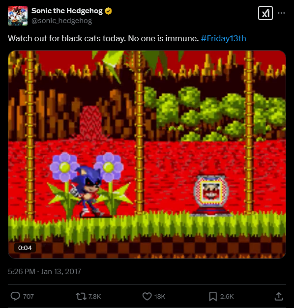

Welcome dear follower, investigator, or wanderer to my world, I hope you have plans to stay because you certainly won't be leaving... this is where I play my game, where I collect souls - there's just so many to play with yet so little time. Have faith though, one day your realm will be mine... then we can play together for eternity. My tale begins a long time ago - before you were even a thought, in a dimension outside space-time is an area known as the void. I was created as a result of primordial energies clashing together - a darkness made concious it was so quiet back then, and I admit, sometimes I miss the quiet. I wandered the void for what felt like millenia before I found something - a window and through it there it was blue, round and ready for conquering - Earth.
Having nothing better to do I watched from my window as you mortals went about your daily lives, it was such a waste thinking whoever created you would kill you one day - why throw away such useful servants? Such great toys? As I watched however I soon saw one human somewhere in Japan, What was his name? Naoto Oshima? He was drawing something... it looked like a humanoid hedgehog of some kind. I'd be lying if I said I wasn't interested in his idea. Such a form, if used properly could be used to trick prey, get their guard down before striking - I felt it perfect for my plans so I tried replicating it through the dark matter that surrounded me. I created many failed prototypes - one of them truly beliving that they could overthrow me, how cute. They were quickly humbled.
Eventually, I managed to create it, the perfect vessel. Though initially it had a flaw - the eyes were a dead giveaway but it was nothing that couldn't be fixed in time soon I created a world based on the one that Hedgehog fellow resided in - though this time the vision was different. See, like I said before why waste such perfect servants? Such perfect toys? I needed a way - a way out a way into your world but doing so required a gateway - a connection. Luckily I found just the person to give me such a gateway - so I made a little "deal" with someone in your government I sent him instructions on a program capable of acting as a window and gateway to my dimension.
In return he'd "get to play a game" - one he's still playing today, how much fun he must be having. H̵͕̅E̵̜͛Ĺ̷̤P̶͚̋ ̷̭͐H̸͈̚E̶̻͘L̷̪͝P̸̬͛ ̵̱̈́H̴̞̎Ė̶̫L̶̝͠P̴̋ͅ ̸̭̋H̸͓͂É̴L̴̗͋P̴̡̍ ̷̦̊Ḩ̸̎E̴͇͂L̴͎̄Ṕ̷̠ Soon your planet would be mine, but I needed to make you aware so I had this Disc delivered to someone - many fell to my game with detectives trying to find me... how quaint. Eventually some came to see me as a GOD, as they rightfully should called themselves the "Cult of X" a name I'd adopt as their deity. Still it wasn't enough, they may have spread the disc around but if Earth is to be mine i'd need more souls - many more. So after one human GammaEpsilon had obtained it - I gave them orders... and now thanks to their efforts even you dear friends can play my game, can see my world - one of beauty, one of bloodshed, one of pain and suffering, a realm of divinity. So don't keep me waiting, I don't like to wait very long.
What is Canon?
Oh, you want to know the canon of this religion? Very well. However rest assured there've been some fakers out there.
List of Canon Media |
|---|
(2011) |
 |
Alternate Timelines
Oh, you're currious about the fakers? Those other timelines... are such a pain fine, but rest assured when you're in my world i'll take my time with you.
List of Canon Media |
|---|
 SONIC II GAIDEN |
 SONIC PROTOTYPE 2017 |
 Sonic 2017/Broken Face |
 Sonic.OMT |
 Sonic Nightmare |
Artifacts/Energies
Artifacts?! Do you really think a bunch of shiny rocks can save you? Dear friend, you should know better, in my world there are only certain energies that matter.
List of Artifacts/Energies |
|
|---|---|
Soul Energy |
Soul Energy is the energy that flows through all that is living and intellegent. Such energy may be used or transported with many of those fakers you call "EXEs" transporting them to their own worlds - making them quite a pain to deal with as there's been so many who've snatched my prey from me. Others use the power of souls to infuse themselves with power, and grow stronger which I find to be a waste of a good soul. |
Chaos Emeralds |
These gems hail from the universe of that Blue Hedgehog and are said to house infinite power - it's for this very reason why I didn't recreate them in my world. Some of those fakers have recreated them in their worlds and look where that got them - face down eating dirt! They're more of a liability than an asset, a distraction, sure fakes may work but even fakes appear to hold some level of power. These gems may serve as a source of hope for the victims of other EXEs - that's why my world doesn't have them because in my world there is no hope. |
The Master Emerald |
Grah! Even more shiny rocks! This one also doesn't exist in my world for the same reason as the last few - again in my world there is no hope, these gems cannot save you from god. |
Black Rings |
Based on the rings found in the Blue Hedgehog's Universe but infused with Void Energy resulting in them taking on a vantablack coloration and glowing gold. Not that it matters, due to being infused with void energy they seem to act unlike normal rings - no saftey net for you. |
Red Rings |
Appears to be the same as a Black Ring only it's infused with both Void Energy and Malevolnt Energy. This gives the ring a red hue, and is often used in Giant Rings to make them lead to perilous places - often used by the fakers for traps, gotta give them credit though they do seem useful. |
Linked & Connected Universes
Apparently my world is part of a much larger multiverse - one that will tremble beneath their god once he finds his way out...
- Connected Universes: Two realms may share a connection, with one of the two being the dominant one referred to as a "Core Universe", events seen in the two realms have/have potential to occur in the other realm.
- Linked Universes: It seems as though my world isn't the core of this multiverse, rather linked to it meaning elements of my world may spill into others - if such is the case they must be having fun.
- Related Universes: Besides my world there are also more distant realms, ones that merely exist. When I get there? Not for long...
|
|
|---|---|
 |
It would appear as though my world has been acknowledged by those Oshima worked for all those years ago, albeit through another faker. Though I'd be lying if I said id didn't find this somehat amusing, rest assured SEGA your blue pet is safe... for now.  |
|
|
 |
My world appears to share a connection to this one, it seems to have been made by various forces - some claim I am one of their creations. Fools, I am owned by nobody I am the ultimate though my realm is connected to this one it appears I may only access it should the dimension will it and that's only possible should it's creators allow me entry. So why not help, and open the door? |